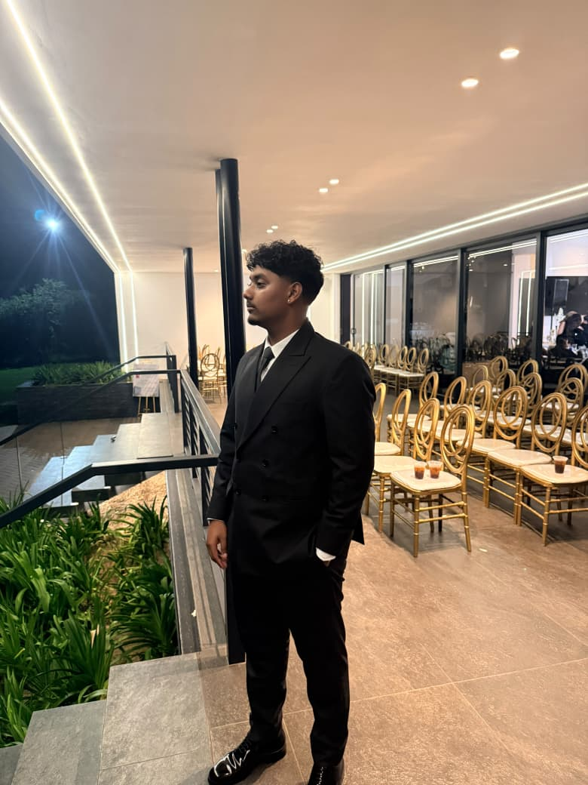

Kalden Varden
Aspiring software developer and IT student
Hello, I'm Kalden Varden, an IT student and aspiring software developer. I chose Information Technology because I enjoy it, and I love how it challenges me to think differently and keep improving. So far I have worked on practical projects, including a hospital bed and booking-in system and a sales report system, which showed me how software can solve real problems for real people. I am especially interested in software development and databases, and I am always looking for new ways to build my skills. This portfolio shows my projects, my progress and what I am working towards. Feel free to explore my work or get in touch.
Career interests
- Software development
- Networking
- Databases
- Computer networks